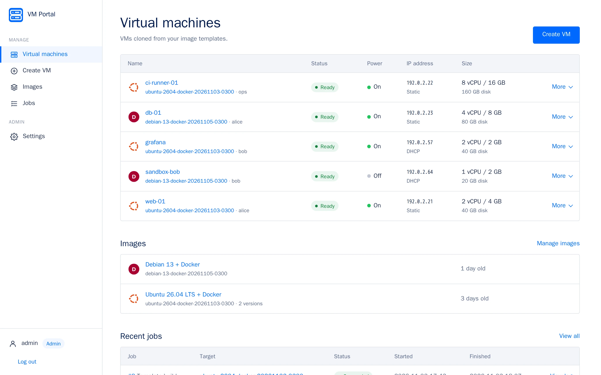
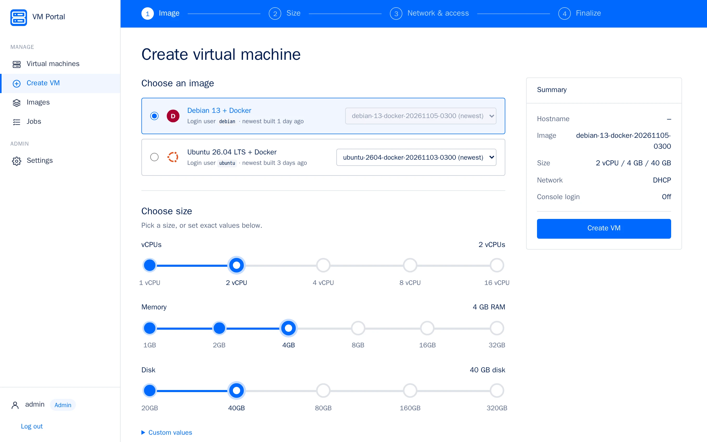
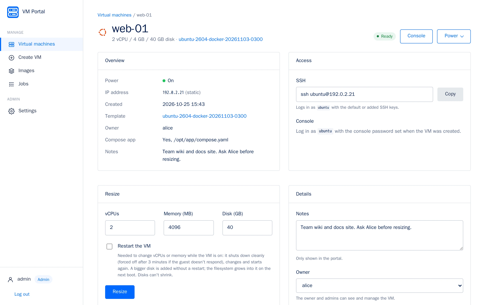
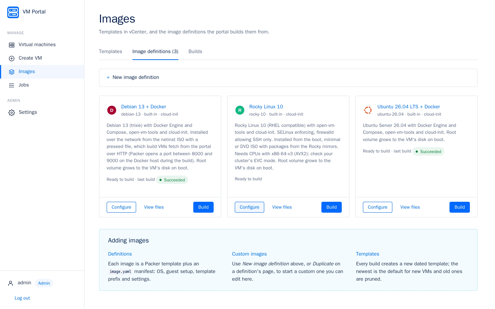
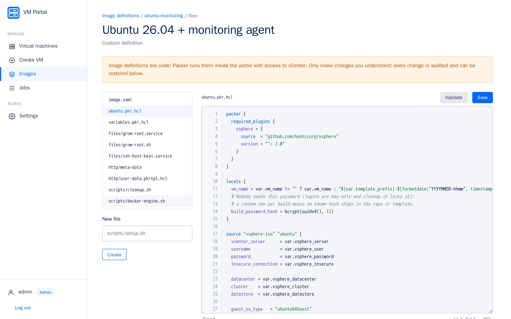
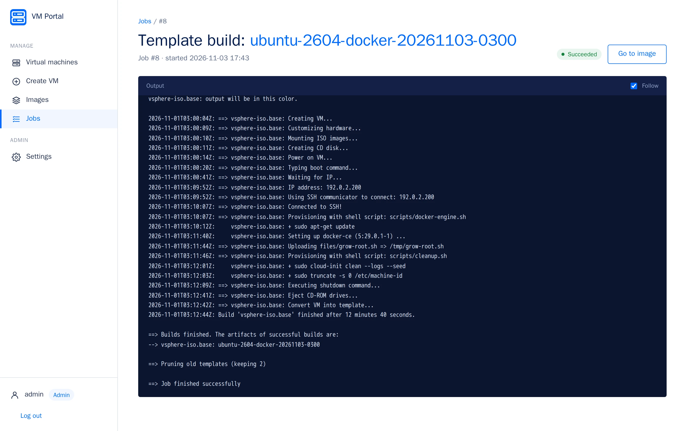

VMs in a few clicks
Pick an image and a size, DHCP or a static IP from a pool (with a free-IP finder), SSH keys
and an optional compose.yaml that starts on first boot. Resize, power and destroy
later from the same page.
Open source · Self-hosted · For VMware vSphere
Users create VMs in a few clicks. Admins build and maintain the templates with Packer, from the same web interface. It all runs in one container next to your vCenter.
Apache-2.0 · Ubuntu 26.04 and Debian 13 templates built in, Rocky Linux 10 as a starter

The everyday work of a small vSphere estate, without handing out vCenter access.
Pick an image and a size, DHCP or a static IP from a pool (with a free-IP finder), SSH keys
and an optional compose.yaml that starts on first boot. Resize, power and destroy
later from the same page.
Each image is a Packer definition. Choose the installer ISO, build with a live log, keep
the newest few versions. Start your own definition from a built-in one and edit it in the
browser, with a full packer validate on every save.
A browser console (noVNC) through the portal, so users never need a route to the ESXi hosts. Optional console password per VM; SSH stays key-only.
Every VM has its own OpenTofu state. A resize is applied only if the plan changes nothing but CPUs, memory and disk, so a change someone made by hand in vCenter stops the job instead of being undone.
Secrets encrypted at rest, a password check before risky settings, an audit log, users who only see their own VMs, child processes without the portal's secrets.
SQLite, OpenTofu, Packer and the vSphere plugins are inside, verified when the image is built, so jobs never download tools. No database server, no message queue, no cloud account.
Taken from the real portal with made-up data. Select one to see it full size.





On a Linux Docker host that can reach vCenter:
git clone https://github.com/OWNER/vm-portal
cd vm-portal
docker compose up -d --build
docker compose logs portal | grep "setup token"Open http://<docker-host>:8080 and enter the setup token. A wizard connects
vCenter (with dropdowns for datacenter, cluster, datastore, network and folder), the IP pool and
your SSH keys. Then pick an installer ISO for an image and build your first template.